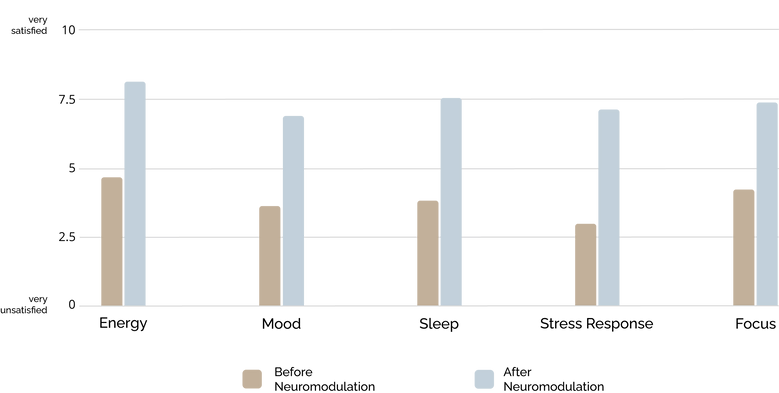

Non-invasive Neuromodulation
Giving Your Brain a Protected Space to Heal
The Benefits
Studies have shown brainwave neuromodulation has an efficacy rate as
high as 93% in addressing post-traumatic stress, traumatic brain
injury, depression, anxiety, or insomnia. There is a clear distinction
between treating the mind and the brain. Integrated Renewal utilizes
non-invasive neuromodulation as a core principle in its 360-approach
to bring balance, healing, and sustained wellness to brain function,
which directly impacts the autonomic nervous system.
Leading experts are addressing the increasing need for more than talk
therapies to recover from prolonged stress and trauma.
The research showing how exposure to extreme stress affects brain function is making important contributions to understanding the nature of traumatic stress. This includes the notion that traumatized individuals are vulnerable to react to sensory information with subcortically initiated responses that are irrelevant, and often harmful, in the present. Reminders of traumatic experiences activate brain regions that support intense emotions, and decrease activation in the central nervous system (CNS) regions involved in (a) the integration of sensory input with motor output, (b) the modulation of physiological arousal, and (c) the capacity to communicate experience in words (Van Der Kolk, B.A., 2006).
Why Acoustic Brainwave Neuromodulation?
The brain responds differently to stress during varying stages of
life. Acute and chronic stress take their toll, deadening synapses and
neurotransmitters, the electrical conduits, and communicators within
the brain, which allow an individual to feel, heal, and maintain
healthy homeostasis. The deadening of these neurons and processes
leads to decreased neurological efficacy and impacts chemical
impulses, resulting in diminished interpersonal functions. In turn,
the brain learns to operate in stuck-learned patterns as neurons
become wired together, resulting in over/under-aroused states. This
may exacerbate ones ability to shed further stress, increases anxiety,
impacts restful sleep, and alters the ability to enjoy life to the
fullest.
In the last decade, there have been significant technological advances
in the medical and psychological fields, which have expanded our
understanding of neurology. EEG non-invasive sensors are placed on
specific areas of the head to scan the lobes and hemispheres,
identifying where there may be imbalance, or it is functioning in
optimal states. Acoustic brainwave neuromodulation uses sound waves to
influence neural oscillations, mirroring the brain, and stimulating
the autonomic nervous system. Many clients fall asleep during sessions
and find the sessions relaxing. Neuro imaging allows the brain to move
from a flight, fright, and freeze state into a balanced recalibration
of both hemispheres, aligning the brain. Treatments result in greater
neuroplasticity and relief for PTSD, depression, anxiety, and improved
sleep.
Let us partner with or your loved ones in achieving personal wellness
goals. Sessions have been stated as “relaxing, reenergizing, and
restful.” Please contact us if you would like more information about
this process.
B. A. Van Der Kolk, “Clinical Implications of Neuroscience Research in PTSD,” Annals of the New York Academy of Sciences 1071, no. 1 (2006): 277-293.
Average Client Improvement Over a Four-Week Integration Period

 Brush Prarie, WA
Brush Prarie, WA
1 hour 30 min, $250
Neuromodulation requires four sessions on consecutive days which average 40-60 minutes. This is followed by a fifth session scheduled three weeks later to complete the integration period.
If you would like more information, please visit the contact tab and fill out the form or click the button above to schedule a 15-minute consultation to discover next steps.